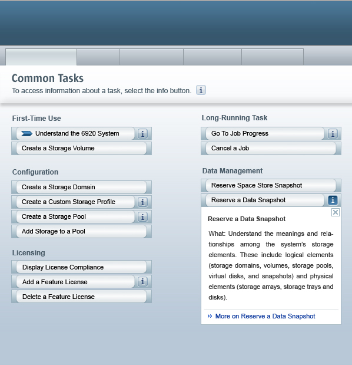

Project Woodstock
Component Functional Spec - Common Task Page |
The Common Tasks Section is used to enhance usability of a product. Applications may have user interfaces that present large list of systems, network devices, storage arrays, and data files with complicated relationships. Users must first understand the relationships among objects to perform a certain task. They must also know the sequence of operations required by the application to accomplish their work task. The Common Tasks Section aims at simplyfing the task. The task page breaks down a set of features into a set of common tasks which the user can choose from. Objects to be affected are selected as part of those tasks, and sequence is either automatic within the task or directly shown on the Common Tasks Section.
The Common Tasks Section delivered by woodstock will
act
as a place from where users can invoke the tasks they wish to
perform.
A commonTasksSection is made up of three jsp custom
tags.
|
Revision |
Date |
Synopsis |
Author |
|---|---|---|---|
| 1.0 |
23/02/2007 |
Functional specification
document. |
Venkatesh Babu |
This section defines the requirements (both functional
and non-functional) for the Common Tasks Section.

The functionalities exhibited by a common tasks section
are :
2.1.2.1 Display a title for
the Common Tasks Section .
2.1.2.2 Display an inline help
for the Common Tasks Section.
2.1.2.3 Display grouped
common tasks inside the common tasks section.
2.1.2.4 Display an info
panel for each common task present in the
common tasks section. This would give information about a particular
task
with which it is associated with.
2.1.2.5 An icon/image can be
optionally displayed for a commonTask element. This should be
displayed along with
the text for each common task.
2.1.2.6 The common tasks
section must be able to arrange the layout of the common tasks group
evenly. This will mean that the number of common tasks in each column
of the common tasks section are same.
2.1.2.7 Clicking on a particular
commonTask takes a user to that particular commonTask.
2.1.2.8 Opening another infoPanel
on the commonTasksSection closes any existing open infoPanels. An open
infoPanel can also be closed by clicking on the close link on the top
right portion of the infoPanel.
2.1.2.9 The number of
columns for a commonTasksSection is customizable.
2.1.2.6 Relationship with other components :-
2.1.2.6.1 The common tasks which are marked as selected in the
preferences page should only be shown in the common tasks page.
2.1.2.6.2 Explore the possibility of making the infoPanel as a
separate component. If this is possible, use this for rendering the
drop down info panel.
None
|
Client OS |
Supported Browsers |
|---|---|
|
Windows 98, Windows XP, Windows 2000, Windows Server 2003 |
Internet Explorer: 5.5 and above |
|
Solaris 8, 9, 10 |
Mozilla 1.4 and above |
|
MacOS X |
Mozilla 1.4 and above |
|
RedHat AS 3.0, 4.0 |
Mozilla 1.4 and above |
|
SuSE 8.0 and above |
Mozilla 1.4 and above |
None
2.3.1 Common
tasks shall be grouped together in some
fashion so that the user can intutively understand.
2.3.2 Common task groups
shall not
nest. Only commontasks can
be added as children to a tasks group
None
The custom tag <webuijsf:commonTasksSection>
renders a common task section. A common tasks section would consist
of a number of grouped common tasks. Selecting on a particular common
task would
either open a pop up window or take him to another page depending on
how the task is configured. Each taskgroup will be denoted
by a <webuijsf:commonTasksGroup> custom tag. Each task that is
present in a commonTaskGroup will be specified with the help of a
<webuijsf:commonTask> custom tag.
To get background for the common tasks page as
shown in the visual representation section(2.1.1) the
<webuijsf:body> tag should have
CTS_BACKGROUND style class identifier as one of its style class values.
This can be specified as:
<webuijsf:body
styleClass="#{themeStyles.CTS_BACKGROUND}">
3.1 Displaying an help for the common tasks section.
An "help" facet should be used for defining a
custom inline
help for the common tasks section.
Alternatively, the helpText attribute of the
<webuijsf:commonTasksSection> custom tag can also be used for
replacing the inline help string that comes up by default.
If this facet or the helpText attribute is not used, a
default inline help will be shown which instructs the user on how to
use the common tasks page.
3.2 Representing common tasks with the commonTask custom tag
Each common task on the common tasks section is represented with a <webuijsf:commonTask> custom jsp tag. The default representation of a common task can be customized using the taskAction facet (see 3.1.1). If the infoPanel related attributes are specified, then an "i" icon is shown which when clicked opens an infoPanel that contains details about the commonTask. Customizing the infoPanel is dealt with in section 3.3
Here is an default case of using the commonTask custom tag.
<webuijsf:commonTasksSection
id="ctp1"
title="#{tasks.tskTtl}">
<webuijsf:commonTaskGroup
id="taskGroup1"
title="#{tasks.grpTtl}">
<webuijsf:commonTask id="task1"
text="#{tasks.tskTxt1}" actionExpression=”foo” />
<webuijsf:commonTask id="task2"
text="#{tasks.tskTxt2}" actionExpression=”bar” />
</webuijsf:commonTaskGroup>
</webuijsf:commonTasksSection>
3.2.1 Using the "taskAction" facet to
specify a commonTask.
<webuijsf:commonTaskGroup
id="taskGroup1" title="#{tasks.grpTtl}">
<webuijsf:commonTask
id="task1" >
<f:facet
name=”taskAction”>
<webuijsf:hyperlink id="taskLink" text="#{tasks.facetLink}"
actionExpression="linkAction"/>
</f:facet>
<webuijsf:commonTask id="task2”
text="#{tasks.tskTxt2}" onClick= “popup()”/>
</webuijsf:commonTaskGroup>
3.3 Creating the infoPanel for the commonTask.
Each commonTask object can
have an info panel specified to it which gives information related to
the task that the commonTask object represents. The text that has to
go into this panel can be given as a part of the commonTask
attributes “infoTitle” and “infoText”or as facets as described in the
next section. This info panel
can also have an hyperlink at the bottom. This link can be specified
with the help of “infoLinkUrl” and “infoLinkText” attributes.
This link directs the user to a source of information which has
much more detailed information about the related task.
Example:
<webuijsf:commonTaskGroup
id="taskGroup1" title="#{tasks.grpTtl}">
<webuijsf:commonTask id="task1"
text="#{tasks.tskTxt1}"actionExpression=”foo” >
<webuijsf:commonTask id="task2”
text="#{tasks.tskTxt2}" onClick= “popup()”
infoLinkUrl="http://www.google.com"
infoLinkText=#{task.lnkTxt2}" infoText=#{task.tskTxt3}"
infoTitle=”#{task.infTtl}” />
</webuijsf:commonTaskGroup>
3.3.1 Specifying Info Panel content through facets.
i) infoLink Facet
The link that is specified at the bottom of the info panel can be customized with the help of the infoLink facet. This facet if specified will take precedence over the infoLinkUrl and the infoLinkText attributes provided for the <webuijsf:commonTask> custom jsp tag.
Example:
<webuijsf:commonTaskGroup
id="taskGroup1"
groupTitle="#{tasks.grpTtl}">
<webuijsf:task id="task1"
text="#{tasks.tskTxt1}" actionExpression=”foo”
infoText="#{task.infTxt}" infoTitle="#{task.infTtl}">
<f:facet name = “infoLink”>
<webuijsf:hyperlink id=”help”
text="#{task.lnkTxt2}" actionExpression=”infoLink”/>
</f:facet>
</webuijsf:task>
<webuijsf:task id="task2"
text="#{tasks.tskTxt2}" actionExpression=”task2” />
</webuijsf:commonTaskGroup>
ii. infoPanel Facet
Use the infoPanel facet to define the content and layout of the info panel. If the “infoPanel” facet is defined, any commonTask tag attributes related to the info panel that are specified will be ignored.
Example:
<webuijsf:commonTasksSection
id="ctp1"
title="#{tasks.tskTtl}">
<webuijsf:commonTasksGroup id="taskGroup1"
title="#{tasks.grpTtl}">
<webuijsf:commonTask
id="task1"
text="#{tasks.tskTxt1}" actionExpression=”foo” />
<webuijsf:commonTask
id="task2"
text="#{tasks.tskTxt2}" onClick="popup()" >
<f:facet name="infoPanel">
<webuijsf:panelGroup
id=”myPanelGroup”>
<webuijsf:staticText
id=”text1” text=#{task.pnlTxt}"/>
<webuijsf:hyperlink
id="link" text=#{task.tlnkTxt2}" actionExpression=”facetLink”/>
</webuijsf:panelGroup>
</f:facet>
</webuijsf:commonTask>
</webuijsf:commonTasksGroup>
</webuijsf:commonTasksSection>
|
Interface Name |
Classification |
Comments |
|---|---|---|
|
CommonTasksSection.js |
stable |
Javascript file for this component |
|
CommonTasksSection.java |
stable |
JSF component class for the CommonTasksSection tag. |
|
CommonTasksSectionRenderer.java |
stable |
Renderer class for the CommonTasksSection component. |
|
CommonTasksGroup.java |
stable |
JSF component class for the CommonTasksGroup. |
|
CommonTasksGroupRenderer.java |
|
Renderer class for the CommonTasksGroup component. |
|
CommonTask.java |
stable |
JSF component which represents a
commonTask. |
|
CommonTaskRenderer.java |
stable |
Renders a CommonTask on to a CommonTasksSection. |
|
Interface Name |
Classification |
Reference |
Comments |
|---|---|---|---|
|
jsf-api.jar |
Standard |
JSR 252 |
JSF components API library, version 1.2 |
| Field Summary | |
|---|---|
static java.lang.String |
HELP_INLINE_FACET
Inline help text facet |
static java.lang.String |
SECTION_HELP
|
| Fields inherited from interface javax.faces.component.NamingContainer |
|---|
SEPARATOR_CHAR |
| Constructor Summary | |
|---|---|
CommonTasksSection()
Creates a new instance of CommonTasksSection |
|
| Method Summary | |
|---|---|
int |
getColumns()
Specify the number of task columns to display in the common tasks section. |
int |
getCommonTaskCount()
Return the total number of CommonTasks
that are present in a CommonTasksSection
This gives the number of visible CommonTask
elements and does not take into account the ones that have rendered or
visible attribute set to false. |
java.lang.String |
getFamily()
Return the family for this component. |
javax.faces.component.UIComponent |
getHelp(javax.faces.context.FacesContext context)
Get the help facet for the CommonTasksSection. |
java.lang.String |
getHelpText()
The help text to be displayed for the common tasks section. |
java.lang.String |
getStyle()
CSS style(s) to be applied to the outermost HTML element when this component is rendered. |
java.lang.String |
getStyleClass()
CSS style class(es) to be applied to the outermost HTML element when this component is rendered. |
java.lang.String |
getTitle()
The title text to be displayed for the common tasks section. |
boolean |
isVisible()
Use the visible attribute to indicate whether the component should be viewable by the user in the rendered HTML page. |
void |
restoreState(javax.faces.context.FacesContext _context,
java.lang.Object _state) Restore the state of this component. |
java.lang.Object |
saveState(javax.faces.context.FacesContext _context)
Save the state of this component. |
void |
setColumns(int columns)
Specify the number of task columns to display in the common tasks section. |
void |
setHelpText(java.lang.String helpText)
The help text to be displayed for the common tasks section. |
void |
setId(java.lang.String id)
The component identifier for this component. |
void |
setRendered(boolean rendered)
Use the rendered attribute to indicate whether the HTML code for the component should be included in the rendered HTML page. |
void |
setStyle(java.lang.String style)
CSS style(s) to be applied to the outermost HTML element when this component is rendered. |
void |
setStyleClass(java.lang.String styleClass)
CSS style class(es) to be applied to the outermost HTML element when this component is rendered. |
void |
setTitle(java.lang.String title)
The title text to be displayed for the common tasks section. |
void |
setVisible(boolean visible)
Use the visible attribute to indicate whether the component should be viewable by the user in the rendered HTML page. |
| Field Summary | |
|---|---|
static java.lang.String |
COMMONTASK_FACET
Common Task facet identifier |
static java.lang.String |
INFOLINK_FACET
Info link facet identifier |
static java.lang.String |
INFOPANEL_FACET
Info panel facet identifier |
| Fields inherited from class javax.faces.component.UICommand |
|---|
COMPONENT_FAMILY, COMPONENT_TYPE |
| Fields inherited from interface javax.faces.component.NamingContainer |
|---|
SEPARATOR_CHAR |
| Constructor Summary | |
|---|---|
CommonTask()
Creates a new instance of Task |
|
| Method Summary | |
|---|---|
java.lang.String |
getFamily()
Return the family for this component. |
java.lang.String |
getIcon()
Specify a theme key for an image to be displayed in front of the text for the task. |
int |
getImageHeight()
Specify the height in pixels of the image that is specified with the imageUrl attribute |
java.lang.String |
getImageUrl()
The path to an image to be displayed in front of the text for the task. |
int |
getImageWidth()
Specify the width in pixels of the image that is specified with the imageUrl attribute. |
javax.faces.component.UIComponent |
getInfoLink()
Checks whether a facet has been specified for the Hyperlinkinside the info panel. |
java.lang.String |
getInfoLinkText()
Specify the text for the link that is displayed at the bottom of the task's information panel. |
java.lang.String |
getInfoLinkUrl()
Specify the URL for the link that is displayed at the bottom of the task's information panel. |
javax.faces.component.UIComponent |
getInfoPanel()
Checks whether a facet has been specified for the infoPanel. |
java.lang.String |
getInfoText()
Specify the text to be displayed in the information panel for this task. |
java.lang.String |
getInfoTitle()
Specify the title text to be displayed in the information panel for this task. |
java.lang.String |
getOnBlur()
Scripting code executed when this element loses focus. |
java.lang.String |
getOnClick()
Scripting code executed when a mouse click occurs over this component. |
java.lang.String |
getOnDblClick()
Scripting code executed when a mouse double click occurs over this component. |
java.lang.String |
getOnFocus()
Scripting code executed when this component receives focus. |
java.lang.String |
getOnKeyDown()
Scripting code executed when the user presses down on a key while the component has focus. |
java.lang.String |
getOnKeyPress()
Scripting code executed when the user presses and releases a key while the component has focus. |
java.lang.String |
getOnKeyUp()
Scripting code executed when the user releases a key while the component has focus. |
java.lang.String |
getOnMouseDown()
Scripting code executed when the user presses a mouse button while the mouse pointer is on the component. |
java.lang.String |
getOnMouseMove()
Scripting code executed when the user moves the mouse pointer while it is over the component. |
java.lang.String |
getOnMouseOut()
Scripting code executed when the user moves the mouse pointer off this component. |
java.lang.String |
getOnMouseOver()
Scripting code executed when the user moves the mouse pointer into the boundary of this component. |
java.lang.String |
getOnMouseUp()
Scripting code executed when the user releases a mouse button while the mouse pointer is on the component. |
java.lang.String |
getStyle()
CSS style(s) to be applied to the outermost HTML element when this component is rendered. |
java.lang.String |
getStyleClass()
CSS style class(es) to be applied to the outermost HTML element when this component is rendered. |
int |
getTabIndex()
Position of this element in the tabbing order of the current document. |
java.lang.String |
getTarget()
The resource at the specified URL is displayed in the frame that is specified with the target attribute. |
javax.faces.component.UIComponent |
getTaskAction()
Returns a component that represents the action element for the CommonTask.When the user clicks on this action element, it takes him to the corresponding task. In the default case, when no facet is specified, an hyperlink is created, with the default styles applied to it and is returned back to the invoking function. |
java.lang.Object |
getText()
The text to be displayed for the task. |
java.lang.String |
getTitle()
The title. |
java.lang.String |
getToolTip()
Sets the value of the title attribute for the HTML element. |
java.lang.Object |
getValue()
|
javax.el.ValueExpression |
getValueExpression(java.lang.String name)
Return the ValueExpression
stored for the specified name (if any), respecting any property aliases. |
boolean |
isDisabled()
Indicates that activation of this component by the user is not currently permitted. |
boolean |
isImmediate()
Flag indicating that event handling for this component should be handled immediately (in Apply Request Values phase) rather than waiting until Invoke Application phase. |
boolean |
isVisible()
Use the visible attribute to indicate whether the component should be viewable by the user in the rendered HTML page. |
void |
restoreState(javax.faces.context.FacesContext _context,
java.lang.Object _state) Restore the state of this component. |
java.lang.Object |
saveState(javax.faces.context.FacesContext _context)
Save the state of this component. |
void |
setDisabled(boolean disabled)
Indicates that activation of this component by the user is not currently permitted. |
void |
setIcon(java.lang.String icon)
Specify a theme key for an image to be displayed in front of the text for the task. |
void |
setImageHeight(int imageHeight)
Specify the height in pixels of the image that is specified with the imageUrl attribute |
void |
setImageUrl(java.lang.String imageUrl)
The path to an image to be displayed in front of the text for the task. |
void |
setImageWidth(int imageWidth)
Specify the width in pixels of the image that is specified with the imageUrl attribute. |
void |
setImmediate(boolean immediate)
Flag indicating that event handling for this component should be handled immediately (in Apply Request Values phase) rather than waiting until Invoke Application phase. |
void |
setInfoLinkText(java.lang.String infoLinkText)
Specify the text for the link that is displayed at the bottom of the task's information panel. |
void |
setInfoLinkUrl(java.lang.String infoLinkUrl)
Specify the URL for the link that is displayed at the bottom of the task's information panel. |
void |
setInfoText(java.lang.String infoText)
Specify the text to be displayed in the information panel for this task. |
void |
setInfoTitle(java.lang.String infoTitle)
Specify the title text to be displayed in the information panel for this task. |
void |
setOnBlur(java.lang.String onBlur)
Scripting code executed when this element loses focus. |
void |
setOnClick(java.lang.String onClick)
Scripting code executed when a mouse click occurs over this component. |
void |
setOnDblClick(java.lang.String onDblClick)
Scripting code executed when a mouse double click occurs over this component. |
void |
setOnFocus(java.lang.String onFocus)
Scripting code executed when this component receives focus. |
void |
setOnKeyDown(java.lang.String onKeyDown)
Scripting code executed when the user presses down on a key while the component has focus. |
void |
setOnKeyPress(java.lang.String onKeyPress)
Scripting code executed when the user presses and releases a key while the component has focus. |
void |
setOnKeyUp(java.lang.String onKeyUp)
Scripting code executed when the user releases a key while the component has focus. |
void |
setOnMouseDown(java.lang.String onMouseDown)
Scripting code executed when the user presses a mouse button while the mouse pointer is on the component. |
void |
setOnMouseMove(java.lang.String onMouseMove)
Scripting code executed when the user moves the mouse pointer while it is over the component. |
void |
setOnMouseOut(java.lang.String onMouseOut)
Scripting code executed when the user moves the mouse pointer off this component. |
void |
setOnMouseOver(java.lang.String onMouseOver)
Scripting code executed when the user moves the mouse pointer into the boundary of this component. |
void |
setOnMouseUp(java.lang.String onMouseUp)
Scripting code executed when the user releases a mouse button while the mouse pointer is on the component. |
void |
setStyle(java.lang.String style)
CSS style(s) to be applied to the outermost HTML element when this component is rendered. |
void |
setStyleClass(java.lang.String styleClass)
CSS style class(es) to be applied to the outermost HTML element when this component is rendered. |
void |
setTabIndex(int tabIndex)
Position of this element in the tabbing order of the current document. |
void |
setTarget(java.lang.String target)
The resource at the specified URL is displayed in the frame that is specified with the target attribute. |
void |
setText(java.lang.Object text)
The text to be displayed for the task. |
void |
setTitle(java.lang.String title)
The title. |
void |
setToolTip(java.lang.String toolTip)
Sets the value of the title attribute for the HTML element. |
void |
setValueExpression(java.lang.String name,
javax.el.ValueExpression binding) Set the ValueExpression
stored for the specified name (if any), respecting any property aliases. |
void |
setVisible(boolean visible)
Use the visible attribute to indicate whether the component should be viewable by the user in the rendered HTML page. |
| Methods inherited from class com.sun.webui.jsf.component.WebuiCommand |
|---|
broadcast,
getAction,
getActionExpression,
getActionListener,
getActionListenerExpression,
setActionListenerExpression,
setId,
setRendered |
| Methods inherited from class javax.faces.component.UICommand |
|---|
addActionListener, getActionListeners, queueEvent,
removeActionListener, setAction, setActionExpression,
setActionListener, setValue |
4.3.3
CommonTasksGroup.java
| Fields inherited from interface javax.faces.component.NamingContainer |
|---|
SEPARATOR_CHAR |
| Constructor Summary | |
|---|---|
CommonTasksGroup()
Creates a new instance of CommonTaskGroup |
|
| Method Summary | |
|---|---|
java.lang.String |
getFamily()
Return the family for this component. |
java.lang.String |
getStyle()
CSS style(s) to be applied to the outermost HTML element when this component is rendered. |
java.lang.String |
getStyleClass()
CSS style class(es) to be applied to the outermost HTML element when this component is rendered. |
java.lang.String |
getTitle()
The title text to be displayed for the common tasks group. |
boolean |
isVisible()
Use the visible attribute to indicate whether the component should be viewable by the user in the rendered HTML page. |
void |
restoreState(javax.faces.context.FacesContext _context,
java.lang.Object _state) Restore the state of this component. |
java.lang.Object |
saveState(javax.faces.context.FacesContext _context)
Save the state of this component. |
void |
setId(java.lang.String id)
The component identifier for this component. |
void |
setRendered(boolean rendered)
Use the rendered attribute to indicate whether the HTML code for the component should be included in the rendered HTML page. |
void |
setStyle(java.lang.String style)
CSS style(s) to be applied to the outermost HTML element when this component is rendered. |
void |
setStyleClass(java.lang.String styleClass)
CSS style class(es) to be applied to the outermost HTML element when this component is rendered. |
void |
setTitle(java.lang.String title)
The title text to be displayed for the common tasks group. |
void |
setVisible(boolean visible)
Use the visible attribute to indicate whether the component should be viewable by the user in the rendered HTML page. |
| Tag Information | |
| Tag Class | com.sun.webui.jsf.component.CommonTasksSectionTag |
| TagExtraInfo Class | None |
| Body Content | JSP |
| Display Name | None |
| Attributes | ||||
| Name | Required | Request-time | Type | Description |
| binding | false | false | java.lang.String |
A ValueExpression that resolves to the UIComponent that corresponds to this tag. This binding allows the Java bean that contains the UIComponent to manipulate the UIComponent, its properties, and its children. |
| styleClass | false | false | java.lang.String |
CSS style class(es) to be applied to the outermost HTML element when this component is rendered. |
| title | false | false | java.lang.String |
The title text to be displayed for the common tasks section. |
| visible | false | false | java.lang.String |
Use the visible attribute to indicate whether the component should be viewable by the user in the rendered HTML page. If set to false, the HTML code for the component is present in the page, but the component is hidden with style attributes. By default, visible is set to true, so HTML for the component HTML is included and visible to the user. If the component is not visible, it can still be processed on subsequent form submissions because the HTML is present. |
| style | false | false | java.lang.String |
CSS style(s) to be applied to the outermost HTML element when this component is rendered. |
| rendered | false | false | java.lang.String |
Use the rendered attribute to indicate whether the HTML code for the component should be included in the rendered HTML page. If set to false, the rendered HTML page does not include the HTML for the component. If the component is not rendered, it is also not processed on any subsequent form submission. |
| columns | false | false | java.lang.String |
Specify the number of task columns to display in the common tasks section. |
| id | false | true | java.lang.String |
No Description |
| helpText | false | false | java.lang.String |
The help text to be displayed for the common tasks section. |
| Tag Information | |
| Tag Class | com.sun.webui.jsf.component.CommonTaskTag |
| TagExtraInfo Class | None |
| Body Content | JSP |
| Display Name | None |
| Attributes | ||||
| Name | Required | Request-time | Type | Description |
| binding | false | false | java.lang.String |
A ValueExpression that resolves to the UIComponent that corresponds to this tag. This binding allows the Java bean that contains the UIComponent to manipulate the UIComponent, its properties, and its children. |
| onDblClick | false | false | java.lang.String |
Scripting code executed when a mouse double click occurs over this component. |
| onKeyPress | false | false | java.lang.String |
Scripting code executed when the user presses and releases a key while the component has focus. |
| target | false | false | java.lang.String |
The resource at the specified URL is displayed in the frame that is specified with the target attribute. Values such as "_blank" that are valid for the target attribute of a HTML anchor element are also valid for this attribute in this component |
| onFocus | false | false | java.lang.String |
Scripting code executed when this component receives focus. An element receives focus when the user selects the element by pressing the tab key or clicking the mouse. |
| infoTitle | false | false | java.lang.String |
Specify the title text to be displayed in the information panel for this task. |
| onKeyUp | false | false | java.lang.String |
Scripting code executed when the user releases a key while the component has focus. |
| onMouseUp | false | false | java.lang.String |
Scripting code executed when the user releases a mouse button while the mouse pointer is on the component. |
| styleClass | false | false | java.lang.String |
CSS style class(es) to be applied to the outermost HTML element when this component is rendered. |
| icon | false | false | java.lang.String |
Specify a theme key for an image to be displayed in front of
the text for the task. The key |
| style | false | false | java.lang.String |
CSS style(s) to be applied to the outermost HTML element when this component is rendered. |
| onClick | false | false | java.lang.String |
Scripting code executed when a mouse click occurs over this component. |
| infoLinkText | false | false | java.lang.String |
Specify the text for the link that is displayed at the bottom of the task's information panel. |
| onBlur | false | false | java.lang.String |
Scripting code executed when this element loses focus. |
| toolTip | false | false | java.lang.String |
Sets the value of the title attribute for the HTML element. The specified text will display as a tooltip if the mouse cursor hovers over the HTML element. |
| onMouseDown | false | false | java.lang.String |
Scripting code executed when the user presses a mouse button while the mouse pointer is on the component. |
| imageHeight | false | false | java.lang.String |
Specify the height in pixels of the image that is specified with the imageUrl attribute |
| imageUrl | false | false | java.lang.String |
The path to an image to be displayed in front of the text for the task. If both icon and imageUrl are provided, the icon takes precedence over the path specified for the image. |
| onMouseOut | false | false | java.lang.String |
Scripting code executed when the user moves the mouse pointer off this component. |
| onMouseOver | false | false | java.lang.String |
Scripting code executed when the user moves the mouse pointer into the boundary of this component. |
| infoText | false | false | java.lang.String |
Specify the text to be displayed in the information panel for this task. |
| onMouseMove | false | false | java.lang.String |
Scripting code executed when the user moves the mouse pointer while it is over the component. |
| text | false | false | java.lang.String |
The text to be displayed for the task. |
| imageWidth | false | false | java.lang.String |
Specify the width in pixels of the image that is specified with the imageUrl attribute. |
| visible | false | false | java.lang.String |
Use the visible attribute to indicate whether the component should be viewable by the user in the rendered HTML page. If set to false, the HTML code for the component is present in the page, but the component is hidden with style attributes. By default, visible is set to true, so HTML for the component HTML is included and visible to the user. If the component is not visible, it can still be processed on subsequent form submissions because the HTML is present. |
| infoLinkUrl | false | false | java.lang.String |
Specify the URL for the link that is displayed at the bottom of the task's information panel. |
| onKeyDown | false | false | java.lang.String |
Scripting code executed when the user presses down on a key while the component has focus. |
| tabIndex | false | false | java.lang.String |
Position of this element in the tabbing order of the current document. Tabbing order determines the sequence in which elements receive focus when the tab key is pressed. The value must be an integer between 0 and 32767. |
| actionExpression | false | false | java.lang.String |
MethodExpression representing the application action to invoke when this component is activated by the user. The expression must evaluate to a either a String or a public method that takes no parameters, and returns a String (the logical outcome) which is passed to the NavigationHandler for this application. |
| actionListenerExpression | false | false | java.lang.String |
Use the actionListenerExpression attribute to cause the component to fire an event. The value must be an EL expression and it must evaluate to the name of a public method that takes an ActionEvent parameter and returns void. |
| rendered | false | false | java.lang.String |
Use the rendered attribute to indicate whether the HTML code for the component should be included in the rendered HTML page. If set to false, the rendered HTML page does not include the HTML for the component. If the component is not rendered, it is also not processed on any subsequent form submission. |
| id | false | true | java.lang.String |
No Description |
| Tag Information | |
| Tag Class | com.sun.webui.jsf.component.CommonTasksGroupTag |
| TagExtraInfo Class | None |
| Body Content | JSP |
| Display Name | None |
| Attributes | ||||
| Name | Required | Request-time | Type | Description |
| binding | false | false | java.lang.String |
A ValueExpression that resolves to the UIComponent that corresponds to this tag. This binding allows the Java bean that contains the UIComponent to manipulate the UIComponent, its properties, and its children. |
| styleClass | false | false | java.lang.String |
CSS style class(es) to be applied to the outermost HTML element when this component is rendered. |
| title | false | false | java.lang.String |
The title text to be displayed for the common tasks group. |
| visible | false | false | java.lang.String |
Use the visible attribute to indicate whether the component should be viewable by the user in the rendered HTML page. If set to false, the HTML code for the component is present in the page, but the component is hidden with style attributes. By default, visible is set to true, so HTML for the component HTML is included and visible to the user. If the component is not visible, it can still be processed on subsequent form submissions because the HTML is present. |
| style | false | false | java.lang.String |
CSS style(s) to be applied to the outermost HTML element when this component is rendered. |
| rendered | false | false | java.lang.String |
Use the rendered attribute to indicate whether the HTML code for the component should be included in the rendered HTML page. If set to false, the rendered HTML page does not include the HTML for the component. If the component is not rendered, it is also not processed on any subsequent form submission. |
| id | false | true | java.lang.String |
No Description |
Work in progress. These selectors are not final and will be changes as soon as latest selectors become available.
|
Key |
Style |
Description |
|---|---|---|
|
CTS_TASK |
commonTask_4 |
Styleclass for a common task. |
|
CTS_GROUP |
commonTaskGroup_4 |
Styleclass for a common tasks group |
|
CTS_SECTION |
commonTaskSection_4 |
Styleclass for a common tasks section |
|
CTS_HEADER |
header |
Styleclass for the header portion of a common
tasks section. |
|
CTS_TASK_MORE |
more |
Styleclass for the "more" link that appears at
the bottom of an info panel. |
|
CTS_SECTION_HELP |
help |
Styleclass for the help that appears below the
heading of the common tasks section. |
|
CTS_TASK_LEFT |
left |
Styleclass for the left part of a common task. |
|
CTS_TASK_CENTER |
center |
Styleclass for the center part of a common task. |
|
CTS_TASK_RIGHT |
right |
Styleclass for the right part of a common task. |
|
CTS_TASK_BACKGROUND |
background |
Background styleclass for a common task. |
|
CTS_TASK_INFOPANEL |
infoPanel |
Style class for the info panel. |
|
CTS_TASK_CONTENT |
content |
Style class for the content that comes in a
common task |
|
CTS_INFOPANEL_CLOSE |
close |
Style class for the close image link that comes
in an info panel. |
|
CTS_TASK_INFO |
info |
Style class for the info panel. |
|
CTS_TASK_BULLET |
bullet |
Style class for the overview image that can be
specified in a common task. |
|
CTS_TOP_BOX |
TskScnTpBx |
Styleclass for a common tasks section. |
|
CTS_TEXT_BGROUND
|
TskScnTxtBg |
Styleclass for the text background of a common
tasks section. |
| CTS_LEFT_BOTTOM |
TskScnLftBtm |
Style class for the left bottom
part of a common tasks section. |
| CTS_LEFT_TOP |
TskScnLftTp |
Style class for the left top part of a common tasks section |
| CTS_RIGHT_BOTTOM |
TskScnRghtBtm |
Style class for the right bottom
of the common tasks section |
| CTS_RIGHT_TOP |
TskScnRghtTp |
Style class for the right top of
the common tasks section. |
| CTS_RIGHT_BORDER |
TskScnRghtBrdr |
Style class for the right border |
| CTS_PADDING |
TskScnTskPdng |
Style class for padding in a
common task. |
| CTS_BACKGROUND |
commonTaskbgColor |
Background color for a common
tasks section. This gives a bluish background for a common tasks page. Used with the body tag. |
4.6.2 Image Resources
|
Key |
Image |
Description |
|---|---|---|
| CTS_SPACER_IMAGE |
spacer.gif |
Spacer image. |
| CTS_RIGHT_TOGGLE |
rightToggle.gif |
The default "i" image which when clicked opens an
info panel. |
| CTS_RIGHT_TOGGLE_EMPTY |
rightToggleEmpty.gif |
The place holder image which is used when no info
panel is associated with a task. |
| CTS_RIGHT_TOGGLE_OVER |
rightToggle-rollover.gif |
The "i" image that is shown when a mouse over
happens. |
| CTS_RIGHT_TOGGLE_SELECTED |
rightToggle-selected.gif |
The "i" image that is shown when a particular "i"
image is clicked to open an info panel. |
| CTS_PANEL_CLOSE |
close.gif |
The close image that is used for closing the info
panel. |
| CTS_OVERVIEW |
bullet.png |
The over view icon that can be used along with
each common task. |
CommonTasksSection.js – Javascript source for the tasks page.
None
Each of the tags commonTasksSection, commonTasksGroup
and commonTask is draggable on to the design canvas. The
commonTasksGroup component can be dragged on to the
commonTasksSection component. The commonTask component can be placed
either as a child to the commonTasksSection component or the
commonTasksGroup component.
When a commonTasksSection component is initially
rendered on to the design canvas, it consists of the default title,
default inline help and some space where task groups and tasks can be
dragged on to the component. It also contains an initital
commonTasksGroup component with a commonTask inside it. The user can
thereafter drag more number of task groups/tasks on to the design
palette. As the number of taskgroups and tasks increases, the width
of the this component can be increased by resizing the component.
The position of the commonTaskGroups/commonTasks on the
commonTasksSection is determined by the commonTasksSection. Once the
user has dragged and dropped a component on to the commonTasksSection,
he cannot control the position of the component. It will be up to the
commonTaskSection component to determine where the component should be
placed.
When a commonTasksGroup component is dragged on to the
commonTasksSection, a default title would be assigned to it.
Users can drag on commonTask to this commonTasksGroup component. When
a commonTask component is dragged on to the commonTasksGroup
component, a default text will be assigned to it, which can
be changed thro the palette. There will not be any visual
representation of the toggled info panel. If the corresponding
attributes for this panel are supplied by the user, then this panel
will show up during the run time.
Note:
As of current release, the common task components are not a part of the
visual web pack.
Properties in the designtime palette:
|
Component |
Attribute |
Attribute Type |
|---|---|---|
|
commonTasksSection |
id |
text |
|
|
title |
text |
|
|
helpText |
text |
| columns |
integer |
|
|
|
style |
text |
|
|
styleClass |
text |
|
|
rendered |
boolean |
|
|
visible |
boolean |
|
|
binding |
text |
|
commonTasksGroup |
id |
text |
|
|
title |
text |
|
|
style |
text |
|
|
styleClass |
text |
|
|
rendered |
boolean |
|
|
visible |
boolean |
|
|
binding |
text |
|
commonTask |
id |
|
|
|
actionExpression |
text |
|
|
actionExpressionListener |
text |
|
|
binding |
text |
|
|
icon |
text |
|
|
imageHeight |
numerical |
|
imageUrl |
text |
|
|
imageWidth |
numerical |
|
|
|
infoLinkText |
text |
|
|
infoLinkUrl |
text |
|
|
infoText |
text |
|
|
infoTitle |
text |
|
|
rendered |
text |
|
|
style |
text |
|
|
styleClass |
text |
|
|
target |
text |
|
|
text |
text |
|
|
tooltip |
text |
|
|
url |
text |
|
|
visible |
text |
|
|
onXXX attributes.(Mouse, key event related) |
text |
|
Class name |
Classification |
Description |
|---|---|---|
|
CommonTasksSectionBeanInfo |
Stable |
Provides static meta data for the commonTasksSection component. |
|
CommonTasksSectionDesignInfo |
Stable |
Describes how the commonTasksSection component should behave during design time. |
|
CommonTasksGroupBeanInfo |
Stable |
Provides static meta data for the commonTasksGroup component. |
|
CommonTasksGroupDesignInfo |
Stable |
Describes how the commonTasksGroup should behave during design time. |
|
CommonTaskBeanInfo |
Stable |
Provides static meta data for the commonTask component |
|
CommonTaskDesignInfo |
Stable |
Describes how the component should behave during |
|
CommonTasksSectionDesignTimeRenderer |
Stable |
Renders the common tasks section on to the design canvas. |
|
CommonTasksGroupDesignTimeRenderer |
Stable |
Renders the common tasks group on to the design canvas |
|
CommonTaskDesignTimeRenderer |
Stable |
Renders the task element on to the design canvas |
Please refer to 4.6.5 for a list of localized message
keys from the commonTasksSection component.
Additionally, the following would be used
commonTasks.taskText – Default task text to come up when a commonTask component is first dragged on to the page.
6.0.1 If a preferences component exists, then
the tasks that are shown on this page depend on the preferences made by
the user on the preferences page.
6.0.2 Hyperlink component – CommonTask
component uses the hyperlink to render the link that takes an user to a
particular task. It also renders an hyperlink at the bottom of the info
panel.
6.0.3
HelpInline component – Renders the inline help for the
commonTasksSection.
6.0.4
StaticText component – Render some of the styles for the
commonTask and the text in the commonTask component.
6.0.5
ImageHyperlink, Image, icon components – Renders
the images that come along with the task, the close link in the info
panel and the “i” icon.
None
None
None
7.2.1
The title and the inline text for the for the common tasks section must
have appropriate localized text.
7.2.2 The common
tasks group title should have appropriate localized text.
7.2.3 The text
for each task element and in the info
panel should have appropriate localized text.